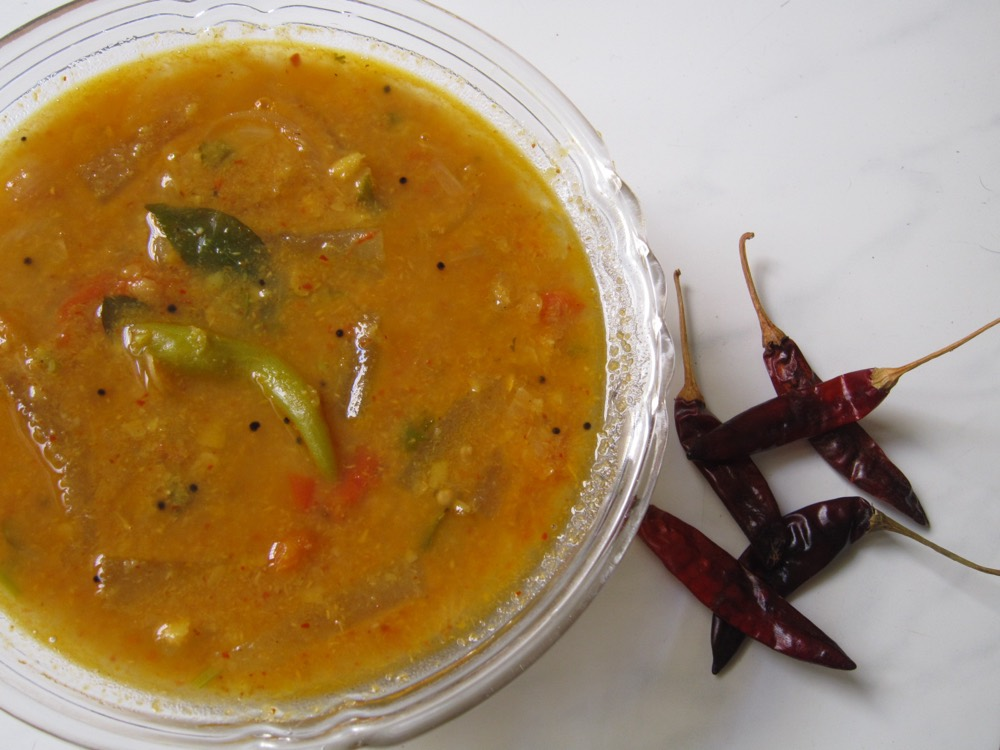

Sambar
Toor dal and vegetables in a tamarind broth, built on freshly ground sambar powder

Contains: mustard
Checked against the ingredient list for ten allergens: milk, egg, fish, crustaceans, tree nuts, peanuts, sesame, mustard, soy and gluten. Brands vary, so read the label on anything new to you.
Ingredients
Quantities for 6.
- 1 cup Toor Dal
- a lime-sized ball, soaked Tamarind
- 2, in pieces Drumstickoptional
- 150g Pumpkinoptional
- 100g Okraoptional
- 10 Shallotsambar onions
- 2 Tomato
- 3 tbsp Sambar Powder
- 1/2 tsp Turmeric
- a good pinch Asafoetida
- 1 tsp Mustard Seeds
- 1/4 tsp Fenugreek Seedsoptional
- 2 Dried Red Chilli
- 2 sprigs Curry Leaves
- to finish Coriander Leavesoptional
- 1 tsp Jaggeryoptional
- 2 tbsp Coconut Oilor sesame oil
- to taste Salt
Cookware
stovetop, pressure cooker
Before you start
- Cook the tamarind broth and the vegetables together before the dal goes in. Vegetables added to dal never take on the sourness properly.
- Sambar powder loses its aroma quickly. If yours has been open six months, it is doing very little.
Method
- Pressure cook the toor dal with turmeric until completely soft, then whisk it smooth.
- Simmer the tamarind extract with the shallots, tomato and harder vegetables, the sambar powder and salt for 12-15 minutes.Cook the raw edge off the tamarind before the dal goes in.
- Add quicker vegetables like okra for the last 5 minutes.
- Stir in the whisked dal and enough hot water to reach a pourable consistency. Simmer 8 minutes; do not boil hard.
- Temper mustard seeds, fenugreek, dried chilli, curry leaves and asafoetida in oil and pour it in.
- Add jaggery if the tamarind is sharp, finish with coriander, and rest 10 minutes before serving.
Storage
Keeps 3 days refrigerated and thickens; loosen with hot water. Freezes 2 months, though okra softens.
Nutrition Low estimate
Low protein: 9 g a serving, 19% of the calories
| Per serving130 g | Per 100 g | |
|---|---|---|
| Calories | 194 kcal | 150 kcal |
| Protein | 9.0 g | 7 g |
| Carbohydrate | 29.1 g | 22 g |
| of which sugars | 2.8 g | 2 g |
| Fibre | 8.2 g | 6 g |
| Fat | 5.7 g | 4 g |
| of which saturated | 3.9 g | 3 g |
| of which unsaturated | 1.2 g | 1 g |
Ingredients given to taste count as zero, so the real figures run a little higher. Nearest database match used for curry leaves, jaggery, sambar powder. Estimated from raw ingredients using USDA FoodData Central.
Written and checked against sources, not cooked in a test kitchen. Times, yields, allergens and nutrition are worked out rather than measured, so use your own judgement on doneness and on storing. More in About.